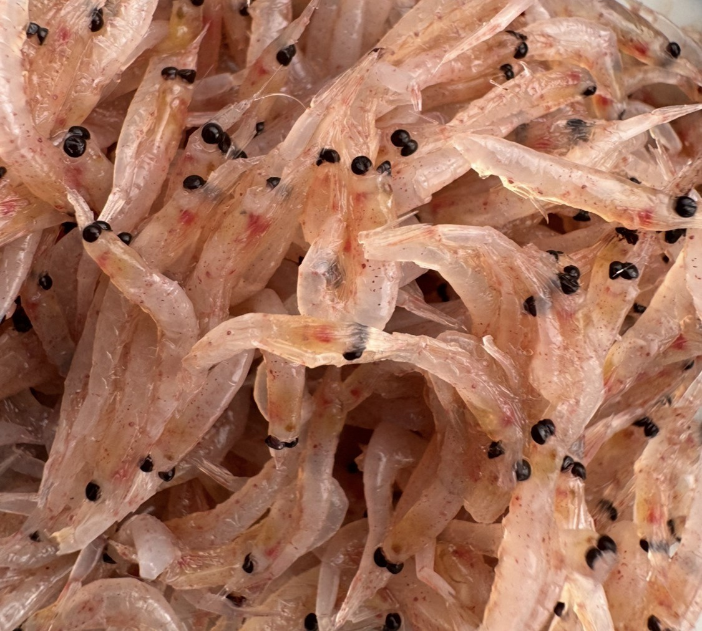

【海水魚の餌】 第８回：
冷凍餌加工に伴うリスク Ⅲ ― 安全な冷凍餌の選び方・冷凍餌の正しい取扱方法
Published: 2026.02.24 | Last Updated: 2026.07.21
「冷凍餌加工に伴うリスクⅠ」では冷凍餌の加工時に起こるさまざまなリスクのうち
・家庭用冷凍庫の性能で起きる問題
・細菌による食中毒の危険性
・酸化による栄養の毒化
などについてお話いたしました。
「冷凍餌加工に伴うリスクⅡ」では
・酵素の暴走による栄養の劣化
・原料による栄養バランスの問題
・混ぜると危険な相互作用のリスク
・リスクを引き受ける覚悟
などについてお話いたしました。
私が８年前に自家製冷凍餌の使用を打ち切ったのは、自作に伴うリスクに気づいたからです。
今から約10年前、私は人工飼料中心の給餌から“生餌（冷凍餌）メイン”のスタイルへと切り替えました。8年前からは現在の「CAS冷凍餌料中心」のスタイルに落ち着いています。理由は人工餌には様々な限界があり、人工飼料にはないメリットが生餌（冷凍餌）にはあるからです。
冷凍餌をメインフードとした給餌の十分な実績も積んだと感じており、その上で筆を執っています。
そして、生餌（冷凍餌）のメリットだけでなく、リスクについても調べ、考え続けてきました。
さまざまなリスクを回避・克服するための、
「安全な冷凍餌の選び方」と「冷凍餌の正しいの取扱方法」について
今回は私なりの経験則からお話していければと思います。
前回までの人工餌の限界や生餌のメリット・冷凍餌加工に伴うリスクⅠ～Ⅱについて読んで頂いてから、こちらを読んで頂けると理解が進みやすいかと思います。
９．安全な冷凍餌の選び方
前回までの内容を踏まえて
■どんな「市販の冷凍餌」を選べば良いのか？？
まとめていきたいと思います。
ここはあえて、消費者目線で厳しめに書きます。
①設備・衛生管理の整った信頼できるメーカーの製品を選ぶ
高性能な冷凍設備を導入し、製造や保管の工程がしっかり公開されているメーカーの製品を選ぶのが安心です。衛生面や原料へのこだわりなどは、メーカーホームページを確認すればある程度判断できます。
情報公開が確認できないメーカーの製品は、私は選ばないようにしています。
冷凍餌加工に伴うリスクⅠの第２章・第３章を参考にしてください。
②人用の冷凍食品を利用する。
全身まるまま与える事が出来る、人間用の「生食用」のサクラエビ・シラス・シラウオなどの冷凍品は有効な選択肢です。
私自身は、通販で信頼できる製品を手に入れています。
例えば「生食用 シラス」「生 サクラエビ」などで検索頂ければ沢山ヒットします。
食品衛生基準をクリアしていて、水揚げ後すみやかに「高性能冷凍機」で瞬間凍結してるなどの条件を満たすものであれば、ドリップも少なく状態は良いです。
通販サイトも詳細を公開してるところが多く、人間用の食品はかなり安心出来ます。
ただし鮮魚店やスーパーの店先で「生の物を買って自宅で冷凍する事」はお勧めできません。何故なら緩慢凍結により細胞壁が壊れドリップの原因になります。
詳しくは冷凍餌加工に伴うリスクⅠの第２章をご参照ください。
③私が8年間使い続けているイチオシ冷凍餌
三陸エンリッチメント研究室は、採れたての餌生物を新鮮なまま、HACCPに準拠した衛生管理のもと、最高性能のCAS冷凍機で凍結し、出荷直前まで超低温で保管されています。ドリップレス・衛生面・保管面など全て高水準で、
その辺りもホームページで全て公開されており信頼度は高いです。
“冷凍餌の理想形”ともいえるような条件が整っており、私が最も信頼を寄せているメーカーさんです。オキアミ・魚卵などの製品バリエーションも豊富です。
詳しくは「私がツノナシオキアミを魚たちの主食に選んだ理由」でもお話しています。

④ドリップの少ないものを選ぶ
水槽に投入したときに白い煙のようなものが舞ったり、魚が口にしたときにエラから“プハー”と成分が漏れるような場合は、生餌が本来もっているはずの栄養成分がドリップとともに流れ出て失われてるサインですので、避けた方が賢明です。
ドリップが多い冷凍餌をじっくり見ると、すでに餌生物の身体が溶けて形が崩れていることがあります。 こうした餌は、
・水揚げから時間が経って自己分解が進んだ原料を凍結している
・冷凍原料を一度解凍し、再包装（リパック）して再凍結している
・性能の低い冷凍庫でゆっくり凍結されている
といった可能性が考えられます。
理由については冷凍餌加工に伴うリスクⅠの第２章・冷凍加工に伴うリスクⅡの第５章をご参照ください。
⑤原料の表示があるかを確認する
パッケージに原料の記載がない商品は避けましょう。
アクア製品には結構出回っています。
私は原料が不明なものは与えないようにしています。
中には乾燥原料や加熱粉末（フィッシュミール・シュリンプミール・乾燥魚卵など）を使った製品もあります。
こうしたものは一見、「生」の冷凍餌に見えても、生餌本来の栄養的メリットは残念ながら得られません。栄養学的に設計されているかを判断できる情報もありませんので、人工飼料より質が悪い可能性もあります。
慣れれば、解凍したときの質感で見抜けるようになります。
第１回人工餌の限界を探るを参考にしてください。
⑥個人・ショップ製の手作り冷凍餌は避ける
個人が自宅で作った冷凍餌や、ショップの店先で手作りされた商品が販売されているケースを見かけます。ですが、衛生管理や冷凍機の性能・栄養学的な設計・保存状態などどこまで配慮されてるか不明なので、原則避けた方が無難です。
⑦淡水魚用の冷凍餌は使わない
ミジンコ・イトミミズ・アカムシなどは、淡水魚の餌としては定番ですが、海水魚にとって必須脂肪酸であるDHAがほとんど含まれておらず、海水魚には不適です。
特に長い絶食後の回復期や餌付け時に使うと、致命的なDHA不足を招く可能性があります。たまのおやつ程度なら良いですが、日常的に与えるのも避けましょう。DHAについて詳しくは「生餌のメリットⅠの第3章」をご参照ください。
以上のように──
冷凍餌は「ただ凍らせればいい」というものではありません。
“栄養を守る” “劣化させない” “安全に届ける”──そのためには、
手間と設備、そして誠意のある製造姿勢が欠かせません。
自分で作るにしても、買うにしても、
魚たちの命を預かる以上、“何をどう食べさせるか”はすべて飼い主の責任だと思います。
１０．冷凍餌の正しい取扱方法
せっかく吟味して選んだ高品質の冷凍餌
なるべく「栄養の喪失を防ぎ、品質を保ち、劣化を防ぎ、長持ちさせ、安全に魚に与えたい」ですよね。
この章では、そのための取扱方法についてお話していきたいと思います。
①一度解凍したものは再凍結しない
いろいろなシーンで冷凍餌が溶けてしまう事があります。
・給餌用に解凍したけど余ってしまった。
・ショップで購入した後、寄り道をしてたら溶けてしまった。
・間違えて冷凍庫でなく冷蔵庫に入れてしまった。
こんな場合、勿体ないから再冷凍したりしたことはないでしょうか？
しかし残念ですが、冷凍餌加工に伴うリスクⅠ～Ⅱでお話した様々なリスクが
飛躍的に増加しますので避けた方が良いと思います。
人の冷凍食品でも再凍結は食中毒のリスクなどの観点から絶対に避けるべきと注意喚起されています。
冷凍餌を買いにショップさんへ行くときはあらかじめクーラーボックスと保冷剤を用意していくなど工夫次第で溶けるリスクを減らすことも出来ます。
②開封後はなるべく早く使う
パッケージを開封すると酸素が流入して
酸化・乾燥・結露（霜）が進みます。
ですので、なるべく早く、長くてもだいたい1ヵ月くらいを目安に使い切るのが
良いのではないかと考えています。
その間、ジッパーやクリップで留めるのもお忘れなく。
■真空パック器の活用
一方で「うちは魚が少ないから1ヵ月で使い切るのは無理」という声が聞こえて来そうですが
そんな時は真空パック器の使用がお勧めです。
空気を完全に遮断する事で飛躍的に消費期限が伸び、冷凍中に起こる様々なリスクの軽減も測れます。
私は十数年前に入手した年季の入ったフードセーバーを使っていますが
今はもっと安価なものや、手動の空気抜きもあります。
どれくらい持つの？については真空パック器の性能と使用するパックの品質にもよるので
人用の冷凍食品のサイトなどで確認するのが良いと思います。
③凍ったまま与えない
凍ったままのブロックをそのまま水槽に投入するシーンを見かけますが
これは絶対に避けた方が良いです。
凍ったまま魚が飲み込むとヒートショックを起こし
最悪死亡してしまうリスクがあります。
かくいう私も過去に溶けてないブロックを誤って水槽に落としてしまい
それを丸のみにした魚を翌々日亡くした経験があります。
翌日から体色が黒ずみ食欲廃絶⇒そのまま次の日にというパターンでした。
④解凍後は速やかに
解凍方法は製品ごとに適した方法がありますが、
共通して言えるのは“解凍後は速やかに与えること”。
常温で長時間放置するのは避けましょう。
再度申し上げますが冷凍で細菌は死滅しませんので魚が食中毒になるリスクも跳ね上がります。そして腐敗や酸化・自己分解などが急速に進みます。
そしてそれらは、魚にとって悪いだけでなく飼育水にも悪影響を与えます。
⑤加工するなら与える直前に！
餌生物が大き過ぎて魚の口に入らない場合など、どうしても加工が必要な事も出てきます。
その場合は与える直前に１食分だけ凍ったまま刻んで、解凍後すみやかに与える事で加工時におこる様々なリスクは避けることが出来ます。
冷凍餌加工に伴うリスクⅠの第２章・第３章を参考にしてください。
⑥自宅に超低温冷凍庫を
自宅にも置けそうなポータブルな超低温冷凍庫（‐35℃～‐60℃）が販売されています。
これは最終手段であり、贅沢品になってしまいますが
冷凍餌の安全な保管にはもっとも最適な機器になります。最強ですｗ
私も勧められたことはあります。
あこがれますが、いざ入手となると色々とハードルが・・・
冷凍加工に伴うリスクⅠの第2章でお話した通り
‐35℃～‐60℃で保存することで、冷凍生鮮品の酸化など様々な劣化がほぼストップするそうです。
魚のためなら出費はいとわないという方はぜひ(笑)
思いつくままに書きましたが、
実は特別なことではなく、人の生鮮食料の冷凍品を扱う上ではほぼ常識レベルの知識です。
人の栄養学・調理学・食品衛生学の分野では基本事項として扱われています。
人の冷凍食品では、繰り返し注意喚起されている内容でもあります。
詳しく知りたい方は、
「冷凍食品 再凍結」「冷凍食品 細菌」「冷凍食品 酸化」「冷凍食品 開封後」「冷凍食品 真空パック」
などのキーワードで検索してみてください。
次回は草食魚や雑食魚のための海藻質補給のために、海藻粉・海苔・人工餌などを利用した工夫などをお話出来ればと思います。
▶【海水魚の餌】 第９回：海藻質補給は？ ―海藻粉・海苔・人工餌の活用
他のコラムも読んでみませんか？
＼ 記事が良かったらポチッと！ ／